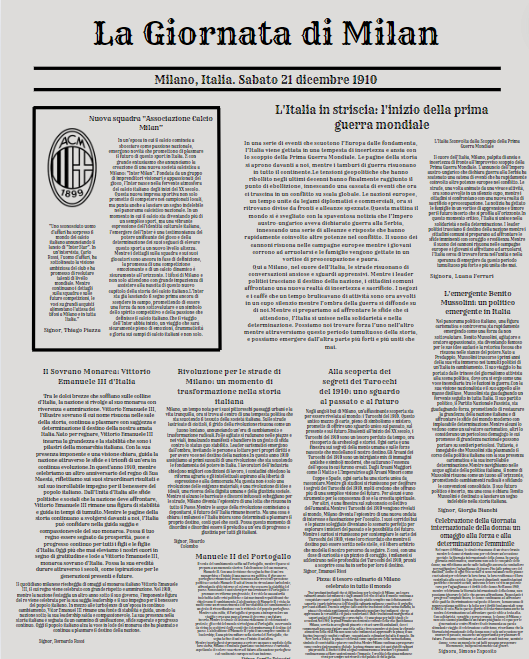

Página Inicial
Humanas
Linguagens
Matemática
Natureza
Técnico ▼
Desenvolvimento de Sistemas
Implantação e Manutenção de Sistemas
Modelagem de Sistemas
Banco de Dados

A atividade visa refletir sobre os meios de comunicação no início do século XX. Iniciamos explorando a plataforma "A Global Guide to the First World War" do The Guardian para entender o contexto da Grande Guerra. Assumindo o papel de jornalistas da época, escrevemos uma matéria principal e duas secundárias sobre a Grande Guerra e a Revolução Russa, abordando aspectos políticos, econômicos e culturais. Finalmente, formatamos essas matérias em uma capa de jornal padrão do início do século XX, proporcionando uma visão prática da mídia da época e dos eventos históricos.
A atividade tem como objetivo interpretar e comparar dinâmicas sociais ao longo do tempo, analisando informações de fontes orais, visuais e documentais. O foco é entender o Holocausto e comparar pontos de vista e ações de indivíduos e grupos em diferentes contextos históricos. Para isso, assistimos a uma aula expositiva sobre o tema, visualizamos vídeos relacionados e participamos de discussões sobre os temas abordados. A atividade promove uma reflexão profunda sobre as dinâmicas sociais e a evolução das ações e perspectivas em diferentes períodos históricos.
A atividade teve como objetivo desenvolver a criticidade sobre o contexto social, político e econômico global. Utilizando o projeto "Hungry Planet: What the World Eats" e o documentário "Life in A Day", analisamos imagens das dietas de diferentes países para refletir sobre suas características sociais e econômicas. A atividade envolveu a observação das imagens, a redação em grupos sobre as características dos países escolhidos, discussões em sala e a comparação com o documentário. Também foi proposto um desafio pessoal de registrar alimentos consumidos ou cenas das férias. O processo criativo incluiu a escolha cuidadosa das imagens e a elaboração de análises detalhadas, refletindo a perspectiva única de cada grupo e promovendo uma compreensão mais profunda das realidades globais.